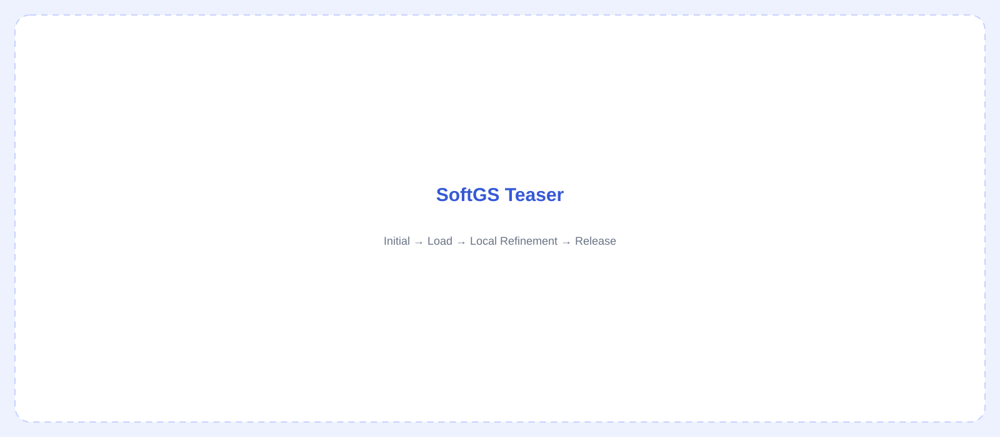

SoftGS
Differentiable Elastoplastic Simulation with Physics-Aware Local Gaussian Refinement
SoftGS combines a differentiable elastoplastic formulation with a mesh-driven local Gaussian refinement strategy. The goal is to support physically meaningful residual deformation while keeping simulation and rendering resolution concentrated in regions where deformation requires it.
D-EP
Continuous plastic activation with an exact sub-yield elastic region and
irreversible plastic state.
Local Refinement
Adaptive mesh refinement is activated only in regions that need more
geometric or simulation resolution.
Gaussian Coupling
Local Gaussian splitting and rebinding follow the refined physical geometry.